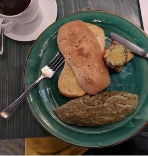
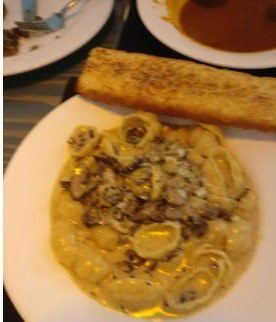
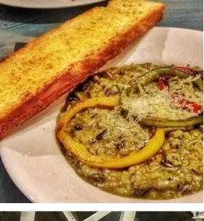
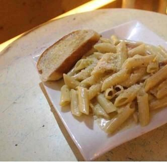
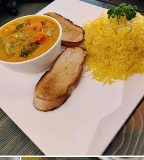
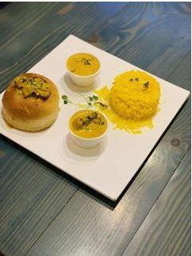

Scola Kitchen & Kaffe is a lively Mediterranean café at SCO 180, in the Inner Market of Sector 7-C, Chandigarh.
The kitchen moves along the coast: spanakopita and pita from Greece, shawarma from Turkey, risotto, lasagna, pizza and pasta from Italy.
Open every day of the week, 11 in the morning to 11:30 at night. About ₹2,400 for two.
From the kitchen
Spinach and feta folded into crisp filo, the house signature.
Slow-roasted and carved, wrapped with pickles and sauce.
Crisp chickpea fritters with warm pita and dips.
Slow-stirred rice, finished creamy.
Layered and baked, from the winter menu board.
The table favourite across every review.
Penne and spaghetti, tossed to order.
On the table






From the café's own listing galleries.